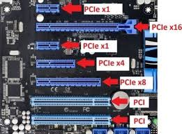
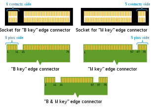
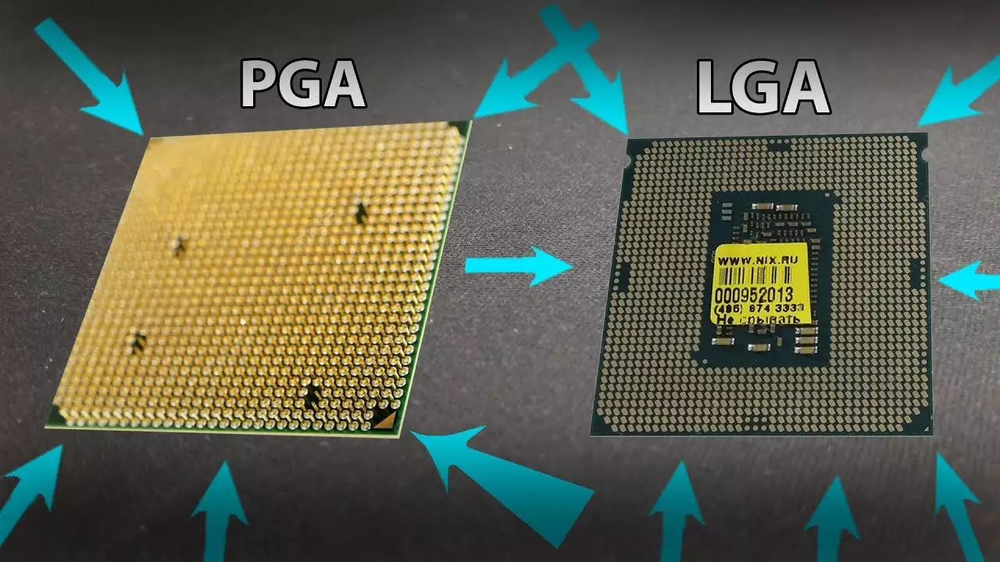

Motherboards Selection Tips
When you're making your PC, you need to pick lots of different components. You probably already have in mind what CPU and GPU you want. But before you get them, you need to make sure you select a compatible motherboard so they can work with each other and all the other components you put in your PC.
Processor Brand
The most deciding factor in picking a motherboard is which CPU brand to pick: Intel or Advanced Micro Devices(AMD). Intel is the much older brand, and they have faster CPUs(as of Dec. 2020). They make CPUs for desktop, laptops, and mobile, and a lot of their CPUs have integrated graphics. AMD offers CPUs that are more affordable, have plenty of cores, but run hotter and slower. They do have a seires of insanley powerful CPUs, the Threadripper seires, and some have 64 cores! But those cost around $5,000, so most people don't want them.
Form factor
There are a few different sizes of motherboards: ATX, M-ATX, and M-ITX. There are more, but these are probably the ones ypu will use.| Mini-ITX | MicroATX | ATX | |
| Size | 9.0 x 7.5 inches | 9.6 x 9.6 inches | 12 x 9.6 inches |
| Expansion Slots | 1 | 4 | 7 |
| RAM | DIMM | DIMM | DIMM |
| RAM Slots | 2 | Up to 4 | Up to 8 |
| GPUs | Up to 1 | Up to 3 | Up to 4 |
| SATA ports | Up to 6 | Up to 8 | Up to 12 |
Motherboard Expansion
GPU
For computers to be of any use to us, we need to be able to see and understand their information. There needs to be some way to output information to a monitor. Some processors have integrated graphics processors, but these only do well for things like productivity. For much else, we are probably going to want to have a standalone Graphics Processing Unit(GPU). These plug into PCIe slots, and usually cover more than 1 slot. When picking a GPU, make sure your motherboard can support it.
RAM
In the early days of computers, any and all info was put into storage. When a computer was handling a task, it was extremley slow because it had to spin the hard drive to get it's data. Today, computers use Random Access Memory(RAM) to store their working data(RAM only works when it has power, so you still need storage). As it's name implies, it's data can be accessed in any kind of way, making your computer run at decent speeds.
Most computers have at least 8GB of RAM, and for heavier use 16GB is recommended. Even for high-end gaming and streaming, you usually shouldn't have to go over that. However, if you're localhosting a server, get as much ram as possible. It'll help!
Storage
You need to store the Operating System(OS), data, and anything else somewhere when power is off, and you you can't put everything in RAM! That's where you need storage. Today, you pick between an Hard Disk Drive(HDD), and a Solid State Drive(SSD). SSDs are faster than HDDs, but is way more expensive in price-to-storage. Most people have a low-storage OS SSD, and a high-capacity HDD for all their data. I recommend at least 256GB, but if you are doing both a SSD and a HDD, you should at least do 128GB on the SSD and at least 1TB for the HDD.
Ports
PCIe
Peripheral Component Interconnect Express(PCIe) is a high-speed serial bus. It is mainly used for graphics cards, but has a variety of other uses such as RAID storage arrays. It can fit WiFi cards and SSDs, but these are usually plugged into M.2 slots(see next section).
There are different sizes, as indicated by the image. Graphics cards usually plug into the PCIe x16 slot, which is so big there is usually only one. You can also see how this motherboard has 2 PCI(not PCIe) slots, which is an older standard that most newer motherboards do not support.
M.2
M.2 is another kind of high-speed port that you find on a motherboard, except this time it's smaller! M.2 is more commonly used for Non-Volatile Memory Express(NVMe) Solid-State Drives(SSDs) and WiFi Cards. There are different types of keying on an M.2 slot, so you can only put certain cards in certain ports.

There are 2 types of sockets and 3 types of connectors. The "B" socket can fit both "B" cards and "B & M" cards, while the "M" socket can fit both "M" cards and "B & M" cards. There are different lengths: 30mm (2230), 42mm (2242), 60mm (2260), 80mm (2280), and 110mm (22110).
CPU socket
You've obviously got to hook up your Central Processing Unit(CPU). The CPU socket is where your CPU lives, and also is where the CPU cooler is mounted. There are two types of sockets: LGA and PGA. Pin Grid Array(PGA) is an older type of socket where there are pins on the CPU and holes on the socket. CPUs with this socket type are more susceptible to damage, and when your CPU loses a pin, it usually means the whole thing is toast!
Land Grid Array, on the other hand, is the more commonly used type of socket. There are pins on the socket this time, which are usually stronger than PGA pins, and 'Lands' on the CPU. This method is much safer because even if you drop your CPU(which I do not recommend doing), then unless internal components are damaged, you're still good!

PGA(left) and LGA CPU types.